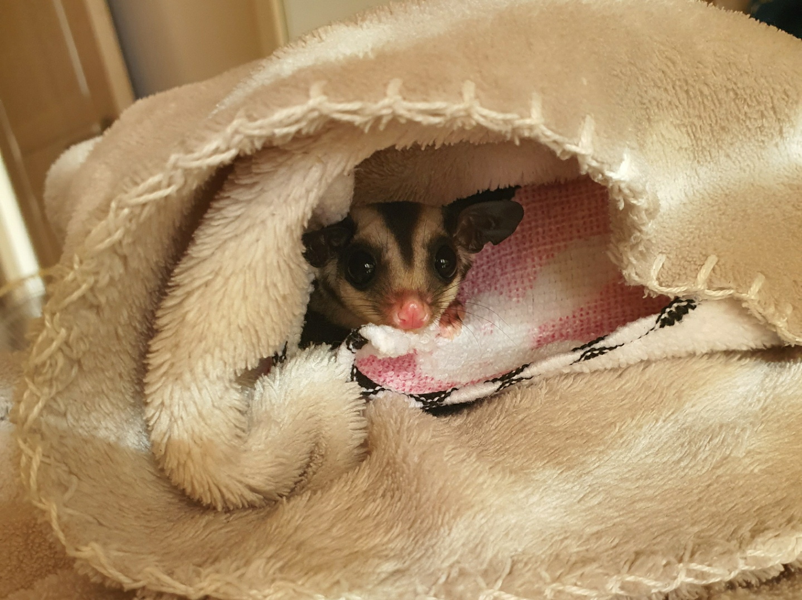

슈가글라이더는 과일, 달걀 등 음식을 먹는다. 백내장에 걸릴 수 있으므로 당근을 주는 것이 좋고, 단백질과 칼슘을 꼭 보충해줘야 한다.

The common name refers to its predilection for sugary foods such as sap and nectar and its ability to glide through the air, much like a flying squirrel. They have very similar habits and appearance to the flying squirrel, despite not being closely related—an example of convergent evolution.